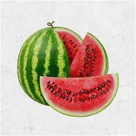

FRUITS and VEGETABLES
1.
we visit sydney's markets many times aweek and hand select the best fruit and veggies for our customers to ensure we deliver the freshest and juiciest produce.
we know our customers really do value fresh and nourishing wholesome food every day.
2. apples and grapes
A common mistake that home fruit growers make is harvesting the crop too soon, especially for grapes and apples.
The color changes observed on the fruit do not necessarily align with full maturity.
It's easier to tell when berry crops are ready to pick through visual cues, such as changes to color, or the ease that the fruit comes off the plant (raspberry in particular).
Those small fruits have a short and fast ripening period between bloom and harvest.
3. Spinach
Spinach is a leafy green flowering plant native to central and western Asia. It is of the order Caryophyllales, family Amaranthaceae, subfamily Chenopodioideae.
Its leaves are a common edible vegetable consumed either fresh, or after storage using preservation techniques by canning, freezing, or dehydration
4. Watermelon

Watermelon is a sweet and refreshing low calorie summer snack.
It provides hydration and also essential nutrients, including vitamins, minerals, and antioxidants.
Watermelon is around 90% water, which makes it useful for staying hydrated in the summer.
It can also satisfy a sweet tooth with its natural sugars. The body produces free radicals during natural processes, such as metabolism.
They can also develop through smoking, air pollution, stress, and other environmental pressures.
5. cabbage

Cruciferous vegetables like cabbage, kale, and broccoli are notorious for being chock-full of beneficial nutrients.
If you are trying to improve your diet, cruciferous vegetables are a good place to start.
The cabbage may help protect against radiation, prevent cancer, and reduce heart disease risk.
6. Coconut
coconut is the edible fruit of the coconut palm (Cocos nucifera), a tree of the palm family.
Coconut flesh is high in fat and can be dried or eaten fresh or processed into coconut milk or coconut oil.
The liquid of the nut, known as coconut water, is used in beverages.